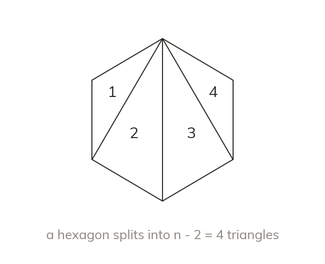

Splitting into triangles
Draw every diagonal from one vertex to split a polygon into triangles. An n-sided polygon gives triangles.
Any polygon can be split into triangles by drawing every diagonal from ONE single vertex. A polygon with sides splits into exactly triangles this way - two fewer triangles than the number of sides, because the two sides meeting at the chosen vertex do not need a diagonal.